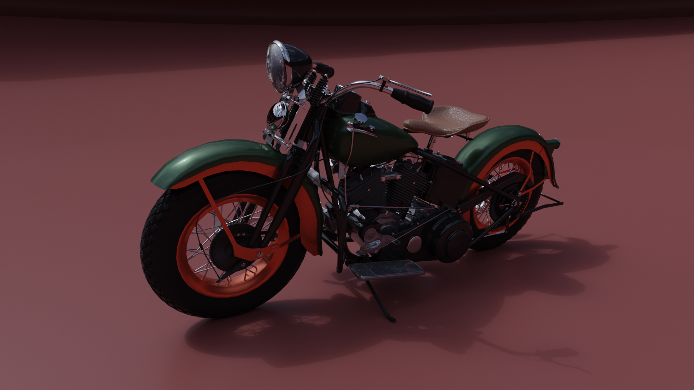
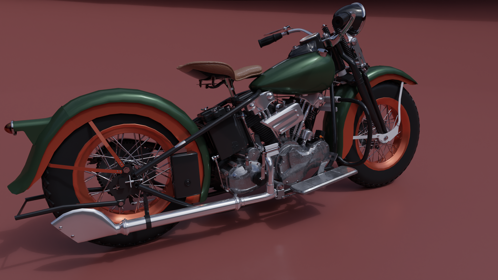
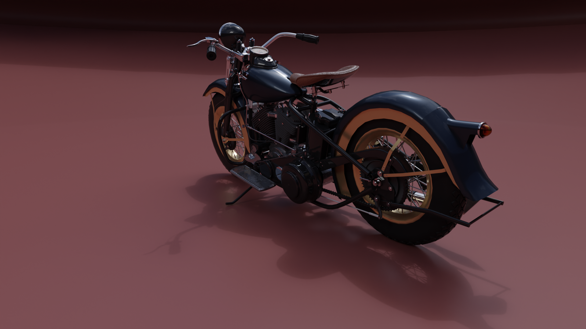
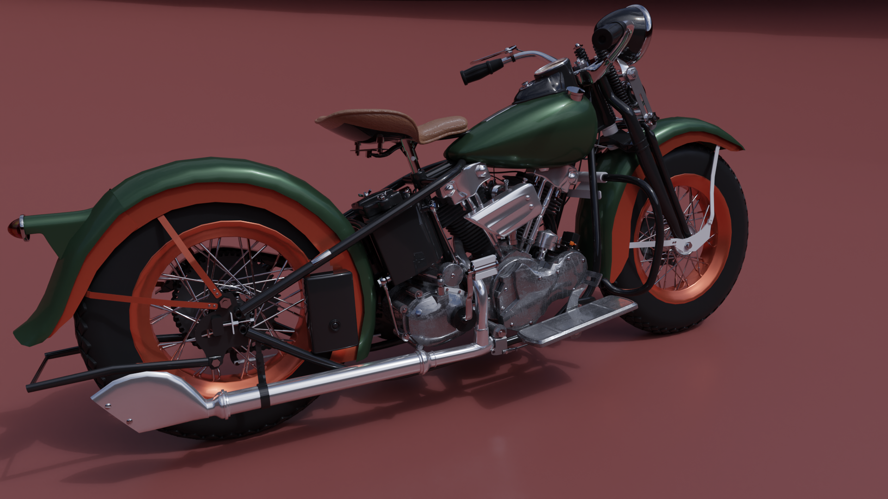
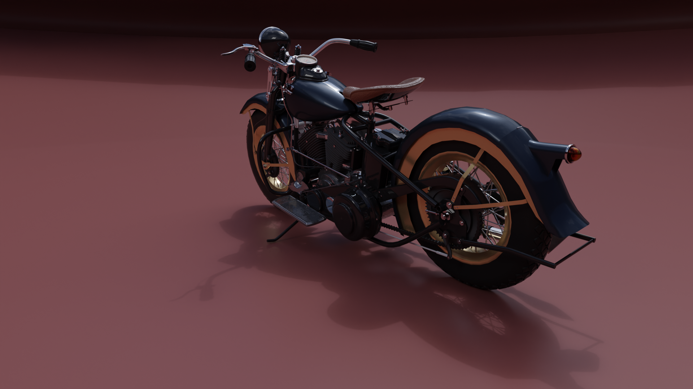
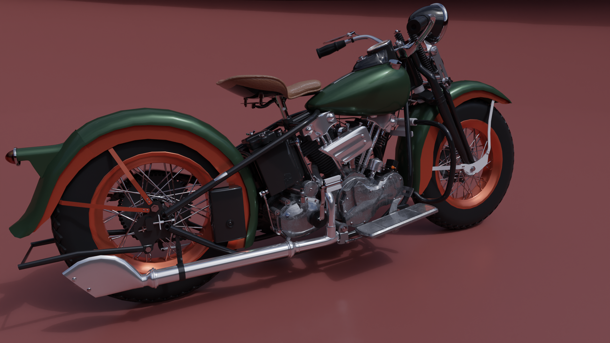
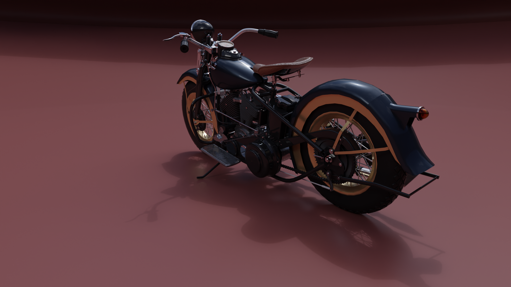

 





Recreation of Harley-Davidson Knucklehead-1936 in Blender
Introducing my latest creation in the realm of 3D design - the Harley Davidson Knucklehead bike. Meticulously crafted using Blender, this project exudes my passion for vintage motorcycles and attention to detail. From the V-twin engine to the weathered textures, I strived to replicate the bike's classic charm while adding my artistic flair. The studio lighting setup accentuates the bike's contours, bringing it to life in stunning realism. This project reflects my commitment to excellence in 3D modeling and my eagerness to take on new design challenges. As a 3D artist, I am excited to collaborate on future projects and push creative boundaries to captivate audiences worldwide.